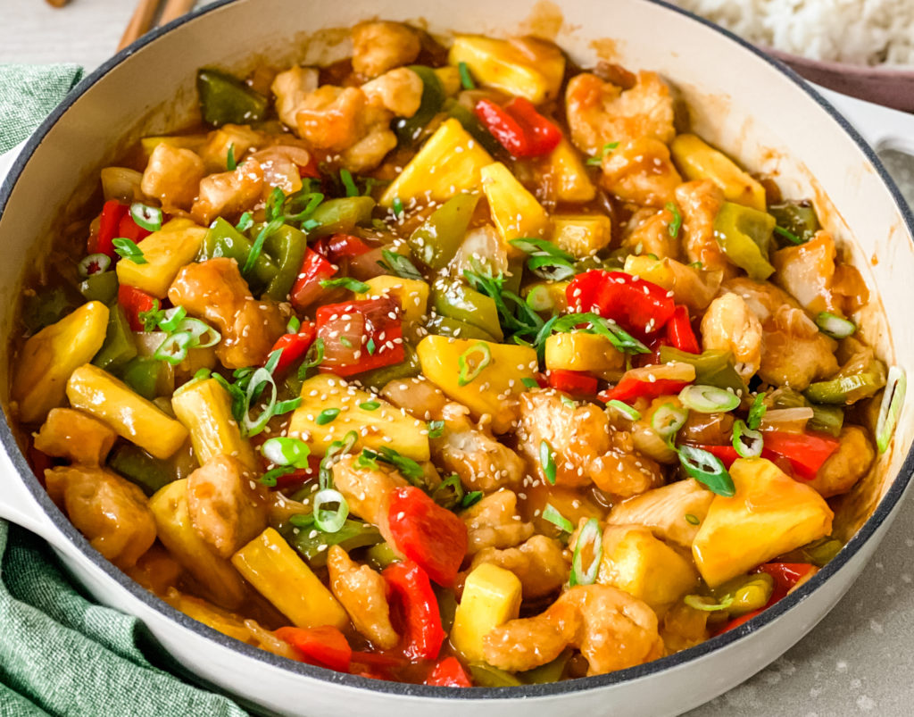

Spaghetti Carbonara
Spaghetti Carbonara is a classic Italian pasta dish made with eggs, cheese, pancetta, and pepper. It's creamy, savory, and incredibly satisfying. Follow our step-by-step guide to create this mouthwatering Italian favorite.

Spaghetti Carbonara is a classic Italian pasta dish made with eggs, cheese, pancetta, and pepper. It's creamy, savory, and incredibly satisfying. Follow our step-by-step guide to create this mouthwatering Italian favorite.
Our Chicken Stir-Fry recipe is a quick and healthy way to enjoy a delicious meal packed with fresh vegetables and tender chicken. With a flavorful stir-fry sauce, this dish is perfect for busy weeknight dinners.
Indulge in layers of cheesy goodness with our Vegetable Lasagna recipe. This vegetarian dish is loaded with vegetables, ricotta cheese, and marinara sauce, making it a comforting and satisfying meal.
Experience the flavors of the sea with our Grilled Salmon with Lemon Butter. This dish features succulent salmon fillets grilled to perfection and drizzled with a zesty lemon butter sauce.